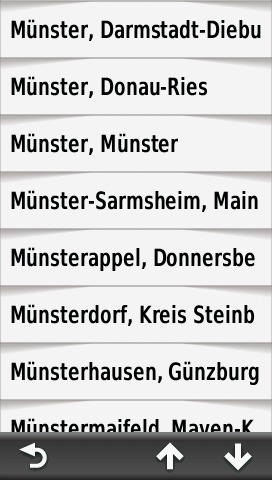

The following examples should explain the concept of index search. All screen shots are taken from a "Montana" GPS-Device.
The menu structure may vary between different device families.
Search for an address (street) - Example "Gartenstiege in Münster (independent Town in North Rhine Westphalia)":
 |
||
| Select "Addresses" | Select "Deutschland" | Select "Spell City" |
 |
 |  |
| Enter "Münster" | Select "Münster, Münster" | Enter "Garten" |
 |
 |
|
| Select "Gartenstiege" | House Numbers are not supported e.g. just enter "1" |
Go |
Search for a categorized Point-of-Interest (POI) - Example: "ATM":
 |
||
| Select "Community" | Select "Bank or ATM" | Search result |
Please note: The Indexsearch is still beta and may in some cases wrong or insufficent.